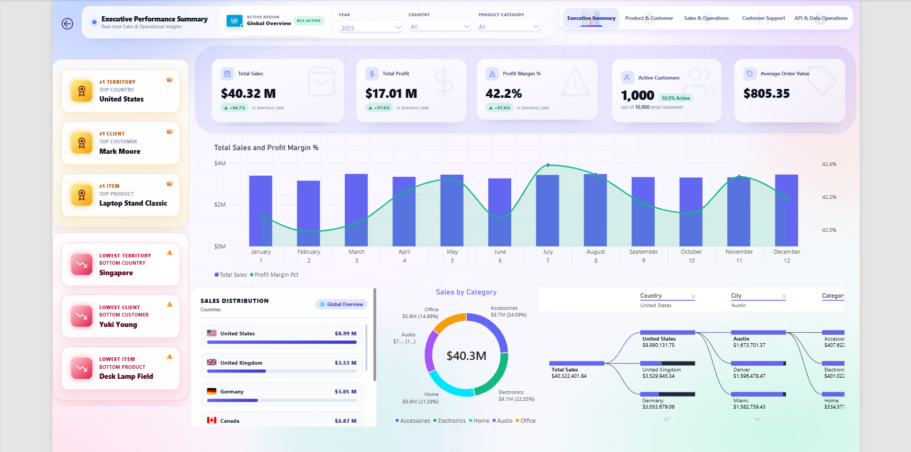
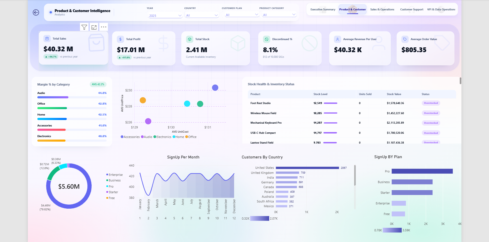
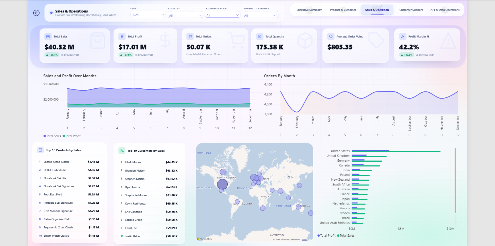
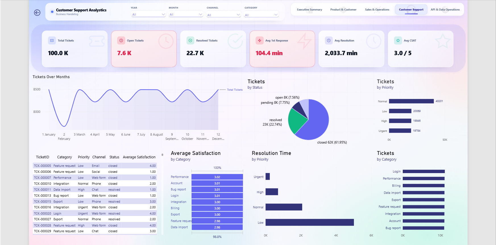
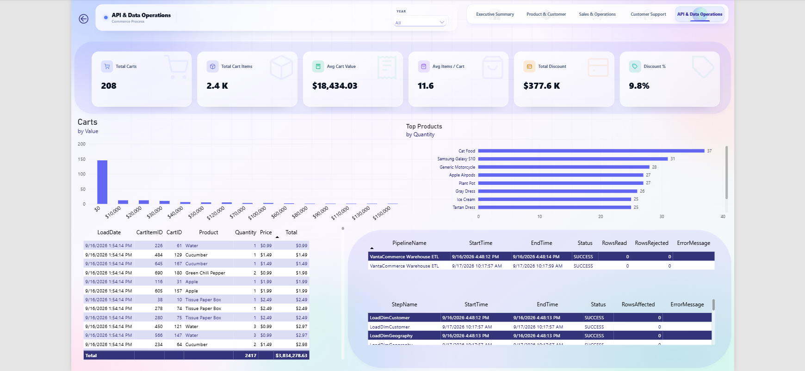
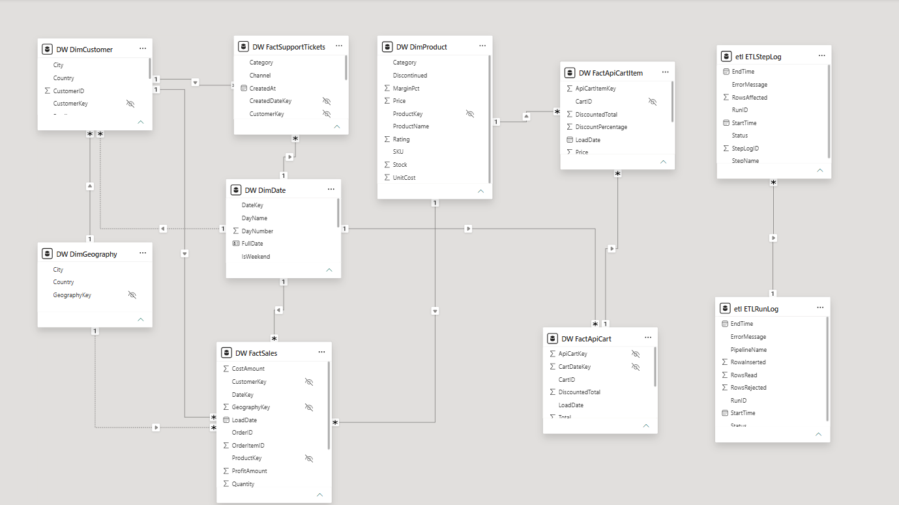

Time & effort
Scope repetitive exports, consolidation and refresh tasks for automation, keeping review and exceptions in the plan.
I’m Mohamad Ayoub, a BI & Data Automation Developer. I connect spreadsheets, APIs and databases with Python and SQL Server, then turn validated data into Power BI reporting.
One workflow. A clear scope. Code and documentation you own.
Data & AI skills Microsoft Fabric & AIMatch source totals. Flag the exceptions.
Keep a record of what changed.
| Order | Source $ | Model $ | Check |
|---|---|---|---|
| ORD-1042 | 124.00 | 124.00 | Match |
| ORD-1043 | 89.00 | 79.00 | Review |
| ORD-1044 | 215.00 | 215.00 | Match |
| ORD-1045 | 62.00 | — | Missing |
Showing all 4 sample checks.
I’m Mohamad Ayoub, a BI & Data Automation Developer. My focus is the underlying workflow: bringing together spreadsheets, APIs and databases, checking the data, and building a reporting layer that is easier to understand and maintain.
My portfolio demonstrates that approach with sample data. For a new project, I’ll start with one defined workflow, agree on the acceptance checks, and include the code, business rules and handover documentation in the scope.
My skill set also includes Microsoft Fabric and AI, alongside data preparation, modelling and reporting.
The opportunity depends on your workflow, data and review needs. Model your own assumptions below, then measure the real change after delivery.
Scope repetitive exports, consolidation and refresh tasks for automation, keeping review and exceptions in the plan.
Use shared definitions, reconciliation and run records to make differences easier to investigate.
Include code, business rules and run instructions in the handover so maintenance is part of the scope.
Inputs stay in this page. No client results or industry averages are prefilled.
Monthly hours = (current weekly hours − expected weekly hours) × 52 ÷ 12. Monthly capacity value = monthly hours × hourly labour cost. Value less running costs = capacity value − monthly running costs.
Hypothetical example, not client results: 8 hours/week now, 2 expected hours/week, $25/hour and $50/month running costs model 26 hours/month of capacity, valued at $650, or $600 after those running costs.
This assumes 52 weeks/year. Setup costs, holidays, ramp-up and changing workloads are excluded. Dollar outputs are rounded to whole USD. A higher remaining workload produces a negative time change.
Why time value differs from cash savings ↗Enter your assumptions to explore a scenario.
Scenario, not client results. Freed staff time is capacity, not guaranteed cash saved, profit or revenue. Payroll only falls if paid costs actually decrease.
Discuss the workflow behind the numbersStart with the work that repeats, the sources that disagree, or the number nobody can explain. That gives the project a concrete problem to solve.
Turn an agreed Excel or CSV reporting routine into a repeatable workflow with explicit inputs and outputs.
Bring ERP, ecommerce, API, spreadsheet and database records into a structured layer with consistent definitions.
Compare source and output totals, define validation rules, and hold exceptions for review before reporting.
Scope refresh schedules, run logs and failure handling around when the information is actually needed.
Scope one capability or connect several into an end-to-end build. Open a row to see the proposed deliverables and tools.
Explore the four stages of a proposed workflow. Select a stage to inspect its tools, key check and expected output. The snippets illustrate the approach; they do not run in this page.
Load agreed CSV, Excel, JSON, API or database sources into a staging layer.
Validate keys, dates and amounts; reconcile totals and preserve exceptions.
Define the grain, relationships, dimensions and business rules for reporting.
Build Power BI reports or agreed outputs with documented measures and refresh rules.
raw = pd.read_csv("orders_sample.csv")
staged = raw.assign(source="orders_sample.csv")Ingest selected.
orders_sample.csv / illustrative log
Portfolio project / sample data. This is an illustrative record for the six-row example below.
INGEST orders_sample.csv → 6 input rows
VALIDATE 3 rows ready · 3 rows held for review
EXCEPTIONS Duplicate ID · ambiguous date · missing amount · negative amount
MODEL Ready-order total → USD 267.00
REPORT Review held rows before publishing a complete report.
Illustrative sample only.
Inspect the sample rowsNormalization is useful.
Exceptions still need
an explicit decision.
The same six sample records, before and after trimming IDs, normalizing date formats and standardizing amounts. Duplicate, ambiguous and invalid values stay visible for review.
Portfolio project / sample data. A fixed example, not client records or measured client results.
order_id,order_date,amount,currency
" a-101 ",2026/10/01,"$120.00",usd
A-102,2026-10-02,89, USD
A-102,2026-10-02,89,usd
A-103,03/10/2026,,USD
A-104,2026-10-04,-12,usd
A-105,2026-10-05,58,usdWhitespace, mixed formats, a repeated order ID, an ambiguous date, a missing amount and a negative amount.
| Order | Date | USD | Result |
|---|---|---|---|
| A-101 | 2026-10-01 | 120.00 | Ready |
| A-102 | 2026-10-02 | 89.00 | Ready |
| A-102 | 2026-10-02 | 89.00 | Review |
| Duplicate order ID. Retained for review; excluded from the ready-order total. | |||
| A-103 | 03/10/2026 | — | Review |
| Ambiguous date and missing amount. No date or amount guessed. | |||
| A-104 | 2026-10-04 | -12.00 | Review |
| Negative amount. This sample rule holds it for review; a real project would define the returns policy. | |||
| A-105 | 2026-10-05 | 58.00 | Ready |
USD 267.00Ready-order total only
6 rows retained 3 ready 3 held
A proposed delivery process with a defined output at each step.
Map the source data, the current manual steps, the required output and who needs to use it.
Output A shared problem definition.
Agree on deliverables, access, timeline, acceptance checks and price in a written proposal.
Output An agreed scope before implementation.
Build around the agreed sources and rules, with inspectable transformations and visible exceptions.
Output A workflow ready for acceptance testing.
Check the agreed outputs, walk through the workflow, and transfer the code, setup and run instructions.
Output Tested deliverables and a documented handover.
If needed, agree on monitoring, fixes, small updates, included hours and response terms.
Output A separate support agreement.
Multi-Source BI & Data Automation Platform
A portfolio build exploring the full workflow: source ingestion, SQL Server staging, validation, dimensional modelling and Power BI reporting. All screenshots use project sample data.
5 report pages · 1 data model
Portfolio project / sample data. Figures shown belong to the project dataset and are not client business results. These are static report screenshots.

Sales, profit, margin and customer activity in one overview, with monthly trends, category mix and geographic drill-down.
Portfolio project / sample data. Not client results.

Explore product margins, inventory status, customer geography and sign-up patterns to understand the business beyond total sales.
Portfolio project / sample data. Not client results.

Compare sales and profit over time, track order volume, and identify leading products, customers and markets.
Portfolio project / sample data. Not client results.

Review ticket volume, response and resolution times, satisfaction, priorities and issue categories.
Portfolio project / sample data. Not client results.

Inspect API cart data alongside pipeline run and step logs, connecting business reporting to the data workflow behind it.
Portfolio project / sample data. Not client results.

See the tables and relationships behind the reports: customer, product, date and geography dimensions; sales, support and cart facts; and ETL logs.
Portfolio project / sample data. Not client results.
Open a screenshot to inspect its full-size original in a new tab.
My skills span data integration, modelling, reporting and AI-assisted workflows. Tap a tool to see its role.
Python — Ingestion scripts, validation and repeatable data tasks.
Microsoft Fabric and AI complement my work in data preparation, modelling, reporting and automation.
Knowledge of Fabric’s analytics platform, from shared data in OneLake to connected data workflows and Power BI reporting.
Fabric connects ingestion, storage, modelling and analytics within one platform. My Fabric knowledge supports understanding how these layers fit together in a BI workflow.
About Microsoft FabricAI-assisted approaches to data preparation, analysis and documentation, with output evaluation and human review.
AI-assisted workflows pair automation with evaluation: check outputs against source data, apply explicit business rules and keep important decisions reviewable.
These are the checks and handover materials I plan into a project scope. The sample above shows the difference between a normalized value and a value that is ready to report.
Required fields, declared types, allowed values and duplicate keys.
Rule definitions + exception rowsSource and output row counts, agreed totals and the reasons for differences.
Source-to-output comparisonsStep status, processed records, warnings and enough context to investigate a failed run.
Readable run and step recordsKnown inputs and expected outputs, including missing, invalid and repeated records.
Acceptance cases + test resultsSetup, business rules, scheduling, reruns and recovery instructions.
Code + a walkthrough + runbookUse these ranges to start the conversation. A written proposal will define the actual sources, deliverables, acceptance checks, timeline and price.
A focused workflow to reduce repetitive reporting steps.
Bring operational data together so teams work from consistent KPIs.
Keep complex data operations moving with scheduled pipelines and reporting views.
Selected: Multi-Source BI System · $500 – $1,200
Discuss selected package ↗Optional after delivery. ETL and refresh monitoring, fixes for agreed workflow issues, small report or KPI updates within an agreed hours cap, and periodic data-quality review.
These are indicative starting ranges — not fixed quotes or market guarantees. Final pricing depends on source count, access method, data quality, business rules, security requirements, reporting scope, testing and timeline. Response times, included hours, exclusions and change requests are defined in the agreement.
Timelines, ownership, scope changes and support. We can discuss anything specific to your workflow during the discovery call.
Reporting Automation typically runs 1–2 weeks. Multi-Source BI Systems run 3–5 weeks. End-to-End builds depend on source count and complexity — usually 6–10 weeks. Timelines are confirmed in the fixed-scope proposal.
No. You bring the business context and the data sources. I handle the technical layer and hand over documentation so your team can maintain it if needed — but you're never required to code.
Wherever you want. Most builds run on your own SQL Server, a cloud SQL instance, or a local warehouse. I don't retain or copy your data — everything stays in systems you control.
We define change requests in the agreement. Small adjustments are absorbed; bigger changes get a written mini-scope with a price and timeline before anything is built. No surprise invoices.
Yes. I can rebuild the underlying data model while keeping your existing report visuals, or build new reports on top of a properly structured pipeline. Often the fastest path is to fix the model and let the reports improve themselves.
Yes — optional monthly support at $150–$350/month depending on scope. It covers pipeline monitoring, fixes, small updates and periodic data-quality reviews. You can cancel any time with the terms we agree on.
Tell me which report takes too long, where the data lives, and what the output needs to answer. We can use a free 15-minute call to define a practical first step.
Book a free 15-min call Connect on LinkedIn